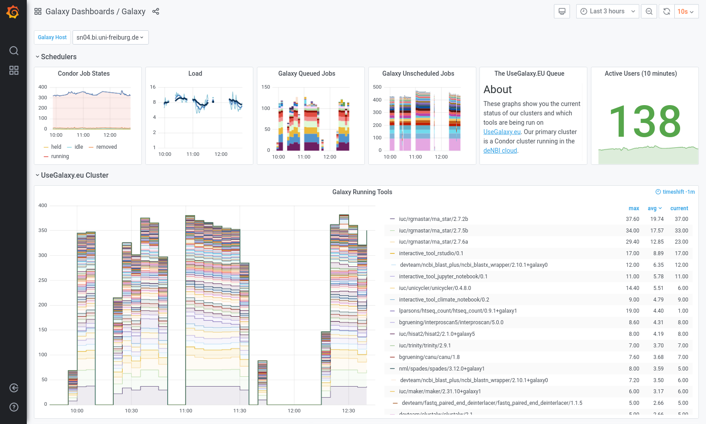
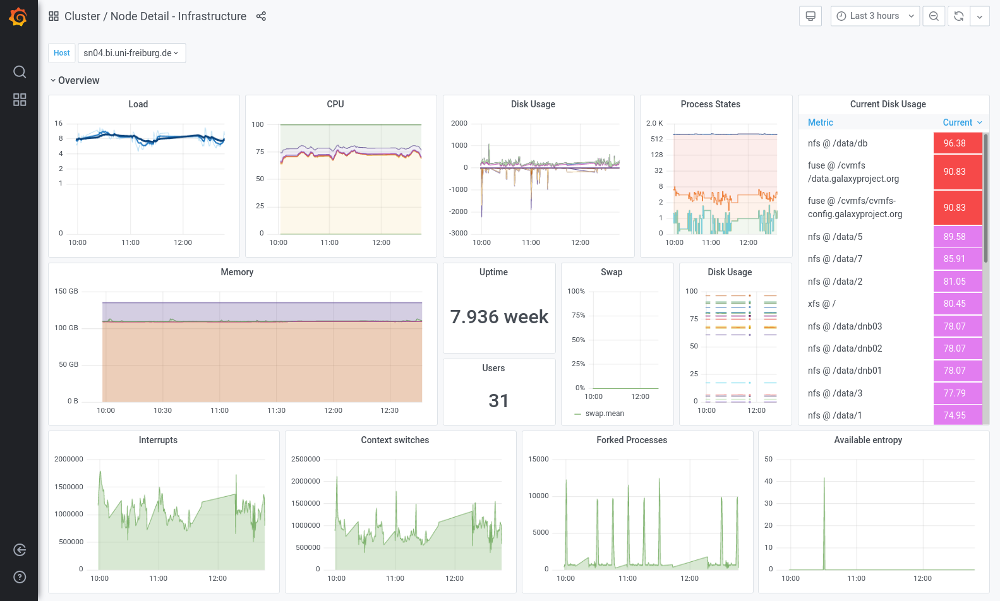
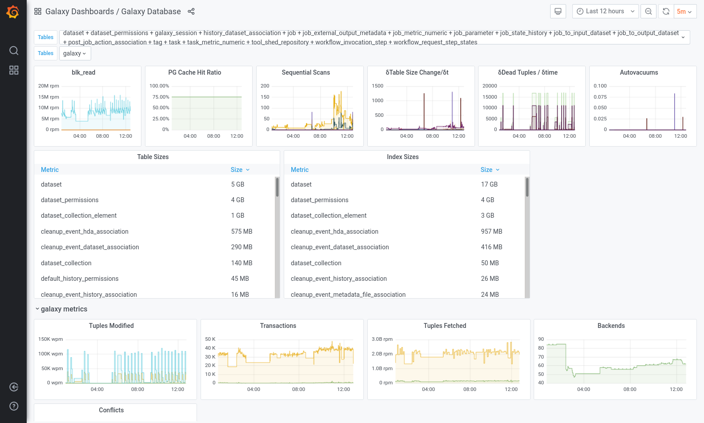
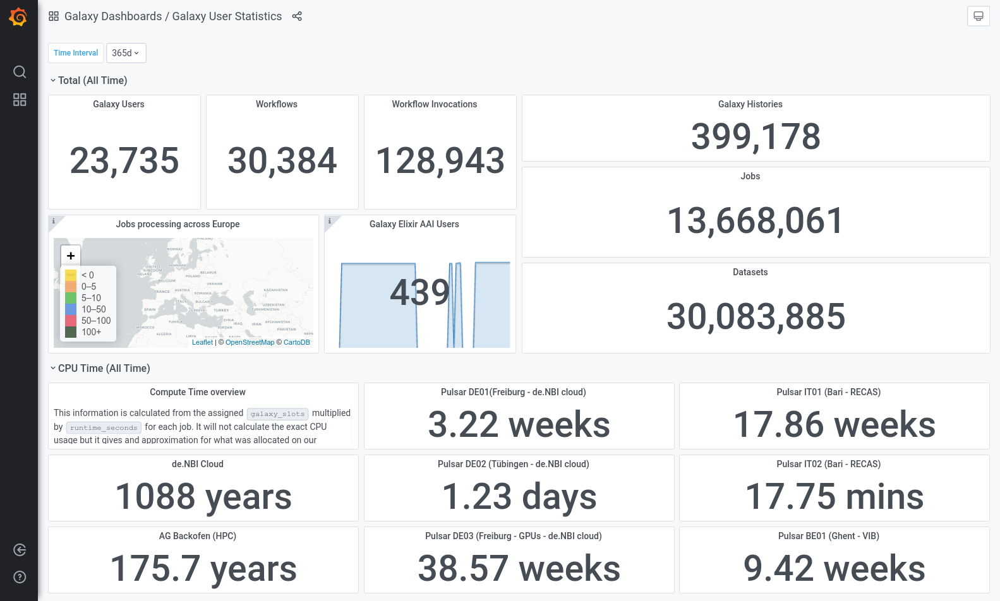
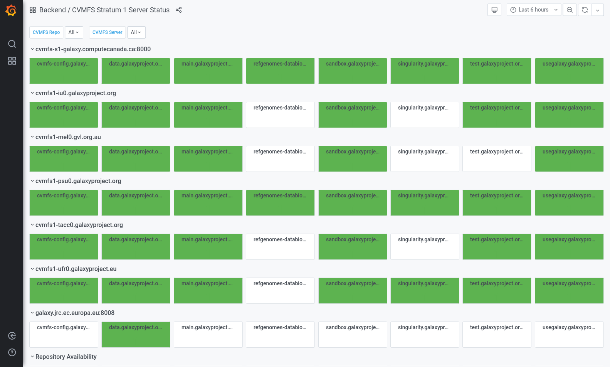

Galaxy Monitoring with Telegraf and Grafana
Contributors
 Nate Coraor
Nate Coraor  Björn Grüning
Björn Grüning  Simon Gladman
Simon Gladman  Helena Rasche
Helena Rasche
Questions
How to monitor Galaxy with Telegraf
How do I set up InfluxDB
How can I make graphs in Grafana?
How can I best alert on important metrics?
Objectives
Setup InfluxDB
Setup Telegraf
Setup Grafana
Create several charts
last_modification Last modification: Apr 6, 2021
Telegraf, InfluxDB, and Grafana
General purpose tools for monitoring systems and services.
| Tool | Use |
|---|---|
| Telegraf | plugin-driven server agent for collecting & reporting metrics |
| Influxdb | purpose built time series database |
| Grafana | dashboard for beautiful analytics and monitoring |
Dataflow:
- Galaxy produces data
- Telegraf consumes and buffers it, before sending it to
- InfluxDB which stores the data
- And Grafana is used to visualise it
Speaker Notes
- Monitoring in Galaxy is easy to setup.
- Galaxy produces data, which is consumed by telegraf.
- telegrafends data to Influx DB.
- This data is visualized in Grafana.
Grafana showcase
- usegalaxy.eu public server
- usegalaxy.org.au public server
- usegalaxy.org private server
If you see a dashboard you can export its configuration and put it on your Grafana with your data. Copy away!
Speaker Notes
- We have several public Grafana servers.
- If you like any of our graphs, you can copy them.

Speaker Notes
- We have built numerous dashboards for monitoring Galaxy.
- These include scripts and playbooks and configuration for everything.
- Here is EU’s galaxy dashboard showing active users, running and unscheduled jobs, etc.

Speaker Notes
- However sometimes we notice something going wrong with our infrastructure.
- We use the node detail dashboard to begin our investigation.
- It gives us a very fast overview of the server.
- This can help efficiently pinpoint isuses.

Speaker Notes
- We also monitor the database heavily.
- All of this monitoring is built into telegraf.
- We need to be able to correlate latency with autovacuums or contention.
- We monitor table size changes to check for anomalies.

Speaker Notes
- Our staff often needs to report numbers for their grants.
- We produced this user statistics dashboard to help them.
- Now they can answer their own questions, and make their own graphs, without admin help.

Speaker Notes
- We don’t just monitor Galaxy though.
- We also monitor CVMFS, and the availability of repositories in each server.
- This can give a good view of which repositories are replicated.
Key Points
- Telegraf provides an easy solution to monitor servers
- Galaxy can send metrics to Telegraf
- Telegraf can run arbitrary commands like `gxadmin`, which provides influx formatted output
- InfluxDB can collect metrics from Telegraf
- Use Grafana to visualise these metrics, and monitor their values
Thank you!
This material is the result of a collaborative work. Thanks to the Galaxy Training Network and all the contributors! This material is licensed under the Creative Commons Attribution 4.0 International License.
This material is licensed under the Creative Commons Attribution 4.0 International License.